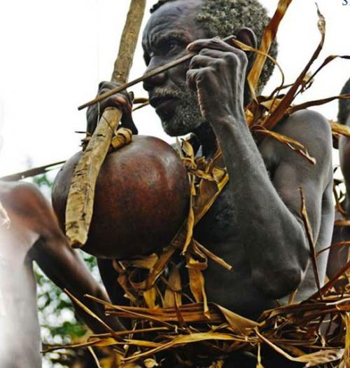

питер. aula de musica. 14.04.2012

традиционное музыкальное занятие по игре на не менее традиционных бразильских народных инструментах.
- ритмы berimbau, техника, импровизации (начинающий и продолжающий уровень), упражнения на полифонию и полиритмию;
- оптимальное и гармоническое построение батерии;
- хоровое пение народного бразильского фольклора;
- новые cantigas de capoeira и пр.
пожеланий как обычно несколько:)
- для тех у кого есть инструменты — приносим с собой (berimbau, pandeiro, reco-reco, agogo, cuica, cavaquinho и пр.)
- блокноты и ручки для конспектов.
- не опаздывать.
- печеньки.
стоимость: 200 руб. (donation)
телефоны: +7 (960) 232-36-02, + 7 (921) 794-49-42
МЕСТО: петербург, лиговский проспект, д. 50, корпус 2, второй этаж [помещение театра PANOPTICUM].
ВРЕМЯ: 17.00 — 20.00